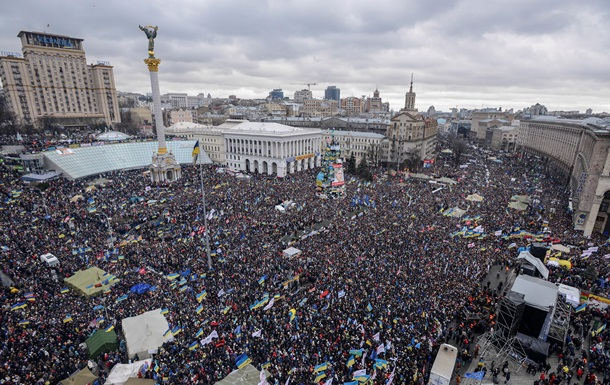
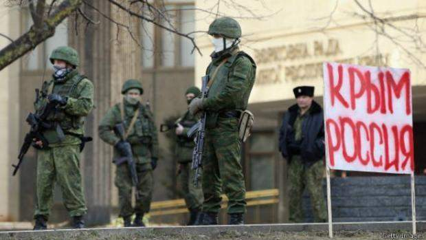
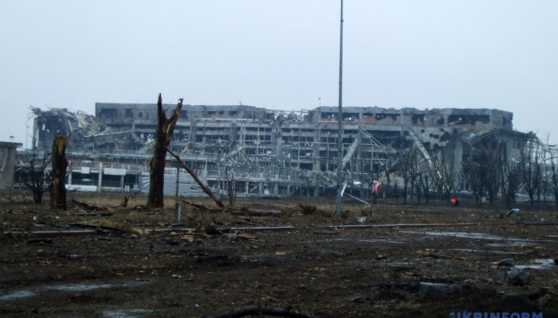
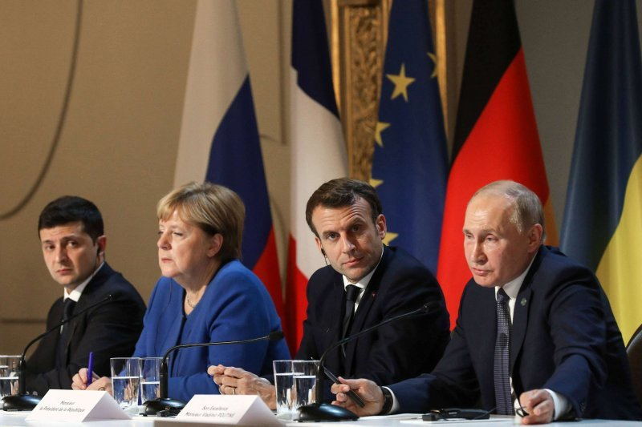

Prehistory
So, lets talk about historical background
It all started in 2014 — not 2022.
-
Firstly, revolution
The Euromaidan (or Revolution of Dignity) was a wave of mass protests in Ukraine from November 2013 to February 2014. It began in Kyiv after President Viktor Yanukovych refused to sign a political and trade agreement with the European Union, choosing closer ties with Russia instead.
After riot police violently attacked peaceful student protesters, hundreds of thousands of Ukrainians joined the movement against government corruption and abuse of power. The protests reached a tragic climax in February 2014, when security forces killed over 100 demonstrators, known today as the Heavenly Hundred. Ultimately, Yanukovych fled to Russia, and Ukraine formed a new pro-European government

Euromaidan 2014 — Revolution of Dignity -
2024: The Start of Aggression and Occupation of Crimea
Taking advantage of the political crisis in Kyiv, Russia shifted to a military scenario:
-
Occupation of Crimea
On February 20, 2014, Russian troops without insignia ("little green men") began seizing strategic sites on the peninsula. In March, Russia held an illegal sham referendum and declared the annexation of Crimea
"Little green men" in Crimea (russians troops without insignia) -
Outbreak of the War in Donbas
In April 2014, Russian sabotage groups led by intelligence officers (including Igor Girkin's unit) captured Sloviansk and other cities in the Donetsk and Luhansk regions. In response, Ukraine announced an Anti-Terrorist Operation (ATO) -
Direct Invasion and First Minsk Agreements
IIn the summer of 2014, the Ukrainian army and volunteer battalions liberated most of the occupied territories. To save the proxy groups of the "DPR" and "LPR" from total defeat, Russia sent regular troops into Donbas in August, leading to the Ilovaisk tragedy and the signing of the first Minsk agreements in September
-
Occupation of Crimea
-
2015–2018: Positional Warfare and "Minsk-2"
After the failure of its plan to create a puppet "Novorossiya," the Kremlin changed tactics, attempting to impose favorable political terms on Ukraine through a protracted armed conflict
-
Battles for Debaltseve and Donetsk Airport
In early 2015, fierce battles raged for Donetsk Airport and the Debaltseve bridgehead despite a declared ceasefire. In February, "Minsk-2" was signed, freezing the front line without stopping daily shelling
Donetsk Airport, which was defended by Ukrainian soldiers for 242 days -
Trench Warfare and AFU Reform
Between 2016 and 2018, hostilities took on a positional character along the contact line. Ukraine used this time to rebuild its army's combat capability, transition to NATO standards, and reformat the ATO into the Joint Forces Operation (JFO) -
Aggression in the Kerch Strait
In November 2018, Russian border guards attacked and captured three Ukrainian naval vessels along with 24 sailors, marking the first instance of overt use of force under the official Russian flag
-
Battles for Debaltseve and Donetsk Airport
-
2019–2021: Peace Attempts and Shift in Kremlin Strategy
Following Ukraine's 2019 presidential election, the new leadership tried to restart the peace process, yet Russia used negotiations solely for pressure and issuing ultimatums
-
Normandy Summit in Paris
In December 2019, a meeting of the leaders of Ukraine, Russia, France, and Germany resulted only in a prisoner swap and a temporary reduction in shelling, failing to advance de-occupation
Normandy Summit in Paris 2019 -
Spring 2021 Escalation
In the spring of 2021, Russia massed around 100,000 troops near Ukrainian borders under the guise of military drills for the first time, testing the reaction of Kyiv and the West -
Ideological Justification for War
In July 2021, Vladimir Putin published an essay titled "On the Historical Unity of Russians and Ukrainians," denying Ukraine's right to statehood, which effectively served as a manifesto for the upcoming attack"Therefore, modern Ukraine is entirely the product of the Soviet era. We know and remember well that it was shaped – for a significant part – on the lands of historical Russia... One thing is clear: Russia was robbed, indeed."
"...Russians and Ukrainians were one people – a single whole. These words were not driven by some short-term considerations or prompted by the current political context. It is what I have said on numerous occasions and what I firmly believe."
-
Normandy Summit in Paris
-
Autumn 2021 – February 2022: Preparation for the Great Invasion
In late 2021, Russia's preparations for a full-scale war entered an open phase, despite denials from Russian diplomats
-
Troop Buildup and Intelligence
Starting in autumn 2021, US and UK intelligence recorded an unprecedented buildup of Russian troops, equipment, and field hospitals around Ukraine, including in Belarus
Vehicles at the airfield near Mazyr, February 22, 2022 -
Ultimatum to the West
In December 2021, the Russian Foreign Ministry issued demands to the US and NATO not to admit Ukraine into the Alliance and to roll back bloc infrastructure to its 1997 borders, knowing well they were unacceptable -
Recognition of "L/DPR" and Attack
On February 21, 2022, Putin signed decrees recognizing the independence of the terrorist groups "DPR" and "LPR" within the entire Donetsk and Luhansk regions. 3 days later, Russia launched a full-scale invasion from the north, east, and south
-
Troop Buildup and Intelligence